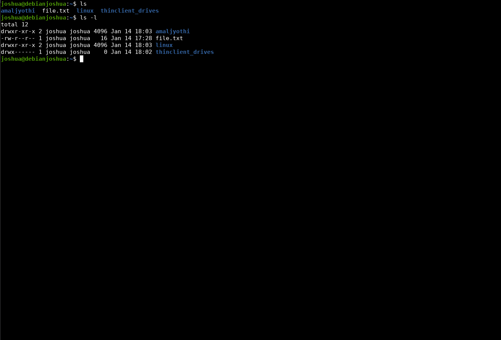

Linux
Linux, created by Linus Torvalds in 1991 while he was a student at the University of Helsinki, has grown from a hobby project into the world's most widely used operating system kernel. It began as an alternative to MINIX and has evolved into a cornerstone of modern computing.
About the Founder:
- Name: Linus Benedict Torvalds
- Born: December 28, 1969, Helsinki, Finland
- Known for: Creating Linux Kernel and Git
- Philosophy: "Talk is cheap. Show me the code."
Linux Evolution:
- 1991: First Linux release (version 0.02)
- 1994: Version 1.0 released
- 1996: Tux the penguin becomes the mascot
- 2011: Version 3.0 released
- Present: Powers 96.3% of the world's top servers
Why Linux?
- Free and Open Source Software (FOSS)
- Highly secure and stable
- Vast community support
- Powers Android, servers, and supercomputers
- Customizable to any need
Fun Fact: The name "Linux" was not Linus's choice. He wanted to call it "Freax" (combining "free," "freak," and "Unix"), but his friend who hosted the files named the directory "Linux" after Linus.
ls (List)
The ls command is essential for viewing directory contents. It displays files and directories with detailed information about permissions, ownership, size, and modification times.
Common Options:
-l: Long listing format with detailed information-a: Show all files including hidden ones (starting with .)-h: Human-readable sizes (KB, MB, GB)-R: Recursive listing of subdirectories-t: Sort by modification time, newest first-S: Sort by file size, largest first
Examples:
Pro Tips:
- Use
ls -lhfor readable file sizes - Use
ls -lato see hidden files with details - Use
ls -ltrto see latest modified files at bottom - Use
ls --color=autofor colored output
cd (Change Directory)
The cd command is used to navigate the filesystem hierarchy. It supports absolute paths, relative paths, and special shortcuts for efficient navigation.
Special Directories:
cd ~: Go to home directorycd -: Go to previous directorycd ..: Move up one directorycd .: Current directory
Examples:
.jpg.png)
Note: Using cd without arguments returns to home directory. Use cd - to toggle between last two directories.
pwd (Print Working Directory)
The pwd command displays your current location in the filesystem. It helps you verify your position and construct absolute paths.
Options:
-P: Show physical path (resolve symlinks)-L: Show logical path (follow symlinks)
Examples:
.png)
mkdir (Make Directory)
Create new directories with the mkdir command. This command can create single directories, multiple directories, and nested directory structures with proper permissions.
Common Options:
-p: Create parent directories if they don't exist-m: Set file permissions-v: Print a message for each directory created
Examples:
.png)
Pro Tips:
- Use
mkdir -p parent/child/grandchildfor nested directories - Use
mkdir -m 755 directoryto set specific permissions - Create multiple directories with
mkdir dir1 dir2 dir3
rmdir (Remove)
Remove files and directories using these commands. The rmdir command removes empty directories, while rm can remove both files and directories with content.
rm [options] file/directory
Common Options:
rm -r: Remove directories and their contents recursivelyrm -f: Force removal without confirmationrm -i: Interactive mode (prompt before removal)rm -v: Verbose mode (explain what's being done)
Examples:
.png)
Warning: The rm -rf command is very dangerous! It will delete everything without confirmation and cannot be undone.
Safety Tips:
- Always double-check before using rm with wildcards (*)
- Use
rm -ifor interactive deletion - Consider using
trash-clifor safer file deletion
cp (Copy)
Copy files and directories from one location to another. Preserves file attributes and handles recursive directory copying with proper options.
Common Options:
-r, -R: Copy directories recursively-p: Preserve file attributes (mode, ownership, timestamps)-i: Interactive mode (prompt before overwrite)-u: Update - copy only when source is newer-v: Verbose mode-a: Archive mode (same as -dR --preserve=all)
Examples:
.png)
Pro Tips:
- Use
cp -ato preserve all file attributes - Use
cp -ufor backup and sync operations - Use
cp file{,.backup}to quickly create a backup - Use
cp -rvto see what's being copied
mv (Move)
Move or rename files and directories. This versatile command can relocate files, rename them, or both simultaneously while preserving attributes.
Common Options:
-i: Interactive mode (prompt before overwrite)-f: Force move without confirmation-n: No overwrite mode-v: Verbose mode-u: Update - move only when source is newer
Examples:
.png)
Pro Tips:
- Use
mv -ito prevent accidental overwrites - Use
mv file{.old,.new}for quick renaming - Move multiple files with wildcards:
mv *.txt directory/
cat (Concatenate)
View, create, and concatenate files. This versatile command can display file contents, create new files, combine multiple files, and redirect output to other commands.
Common Options:
-n: Number all output lines-b: Number non-blank output lines-A: Show all non-printing characters-s: Suppress repeated empty output lines-E: Display $ at end of each line-T: Display TAB characters as ^I
Examples:
.png)
Pro Tips:
- Use
cat > file.txtto create and write to a new file - Use
cat file1 file2 > combined.txtto merge files - Use
cat -n file.txt | lessfor paginated output - Use
cat << EOFfor here-documents in scripts
touch
Create empty files or update file timestamps. This command is essential for file creation, timestamp manipulation, and build system management.
Common Options:
-a: Change only the access time-m: Change only the modification time-c: Don't create new files-d: Set specific date/time-r: Use timestamp from reference file-t: Set specific timestamp (YYYYMMDDHHMM.SS)
Examples:
.png)
Pro Tips:
- Create multiple files:
touch file1 file2 file3 - Update timestamp to current time:
touch existing_file - Set specific date:
touch -d "2023-12-25 12:00" file - Match timestamp with another file:
touch -r reference_file target_file
grep (Global Regular Expression Print)
Search for patterns in files using regular expressions or simple text. A powerful tool for text searching, filtering, and pattern matching across files and directories.
Common Options:
-i: Case-insensitive search-r: Recursive search in directories-l: Show only filenames with matches-n: Show line numbers-v: Invert match (show non-matching lines)-w: Match whole words only-A n: Show n lines after match-B n: Show n lines before match-C n: Show n lines before and after match
Examples:
.png)
Pro Tips:
- Search recursively:
grep -r "pattern" directory/ - Count matches:
grep -c "pattern" file - Use extended regex:
grep -E "pattern1|pattern2" file - Exclude directories:
grep --exclude-dir={dir1,dir2} -r "pattern" - Search multiple patterns:
grep -e "pattern1" -e "pattern2" file
Note: Grep supports basic and extended regular expressions for powerful pattern matching.